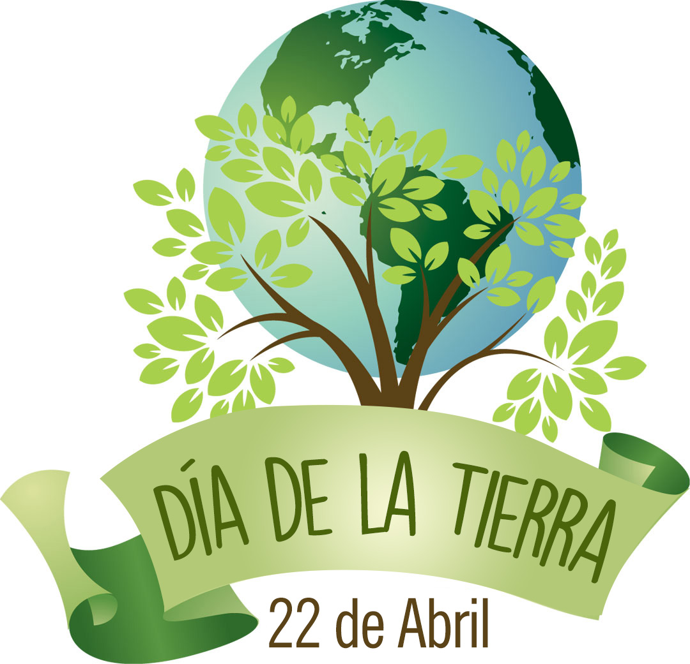

Antecedentes
El mundo ha respondido con lentitud a las emergencias generadas por el calentamiento de la Tierra y los daños que nuestra imprudencia está causando a nuestro planeta. Allá por 1972, cuando los ecologistas eran considerados un grupo marginal, celebramos en Estocolmo la primera Conferencia de las Naciones Unidas sobre el Medio Humano. Ésta representó el inicio de un proceso de concienciación mundial acerca de la interdependencia que existe entre los seres humanos, las demás especies vivas y nuestro planeta.
El Día Internacional de la Madre Tierra promueve una visión del planeta como la entidad que sustenta a todos los seres vivos de la naturaleza. Rinde homenaje específicamente a la Tierra en su conjunto y al lugar que ocupamos en ella. El Día Internacional de la Madre Tierra no tiene por objetivo reemplazar otros actos, como el Día de la Tierra que se celebra en muchos países desde los años setenta, sino reforzarlos y reinterpretarlos sobre la base de los cambiantes desafíos que enfrentamos.
En el año 2009, en su octavo período de sesiones, el Foro Permanente para las Cuestiones Indígenas solicitó a los relatores especiales pa ra que prepararan un estudio sobre la aplicación de la resolución 63/278 de la Asamblea General teniendo en cuenta, entre otras cosas, la necesidad de respetar y reconocer los derechos de la Madre Tierra. En sunoveno período de sesiones, el Foro Permanente para las Cuestiones Indígenas discutirá los resultados del estudio, así como la labor hacia el establecimiento de una Declaración sobre los Derechos de la Madre Tierra.

Aplicación 5
Día de la Tierra
Cielo Abril Maca Malpica
Repoblación forestal
Nuestro planeta está perdiendo más de 15 mil millones de árboles cada año. Eso es 56 acres de bosque cada minuto. Estamos trabajando para detener esa tendencia y darle la vuelta. Estamos plantando árboles que ayudan a las comunidades -especialmente pobres del mundo-comunidades sostienen a sus economías locales. Por cada dólar gastado en la plantación de árboles, 2,5 dólares se genera en ingresos y beneficios locales. Ayudarnos a restaurar la cubierta de árboles y reconstruir las economías locales. Cada recuentos árbol!
Aplicación 5
Día de la Tierra
Cielo Abril Maca Malpica
Especie en peligro
Las especies se extinguen a un ritmo más rápido que nunca. Hemos entrado en una sexta extinción masiva causada por una actividad humana global. Necesitamos que ayuda a proteger a cientos de especies mientras podamos.
Para el Día de la Tierra 2016, Red del Día de la Tierra se ha asociado con obras de arte para el cambio , una organización artística basada en Oakland. Las obras de arte para el cambio crea exposiciones de arte contemporáneo que se ocupan de los problemas sociales y ambientales críticos. Ellos han creado una exposición de arte en línea para el Día de la Tierra 2016, con obras de 35 artistas invitados, entre ellos Daniel Beltrá, Lori Nix, Ed Burtynsky, Chris Jordan, Alexis Rockman, Mary Mattingly, Thomas Hirschhorn, Ruben Ochoa, Guerra de la Paz y otros . La exposición también contiene una Red del Día de la Tierra tour destacados , que combina obras de arte de la exposición con información sobre el Día de la Tierra y las campañas de la Red del Día de la Tierra.
Para mas informacion ve esta pagina:
Aplicación 5
Día de la Tierra
Cielo Abril Maca Malpica
4 Simples pasos para ayudar a la naturaleza
1. Alimentación
Come tus verduras. Un reportaje de 2006 de la Organización para la Agricultura y la Alimentación de las Naciones Unidas (en inglés) reveló que el sector ganadero genera más emisiones que todos los aviones, trenes, y autos en el planeta. Además, la cria de animales requiere de grandes extensiones de pastos, incentivando la tala de bosques naturales.
2. Basura
No tires la basura y recógela donde la veas. El Programa de Medio Ambiente de las Naciones Unidas informa que los desechos plásticos son responsables de la muerte de más de un millón de aves marinas y 100.000 mamíferos marinos cada año.
3. Limpieza
Utiliza productos no tóxicos. A pesar de haber muchos productos químicos para limpiar la casa, la mayoría son tóxicos, peligrosos, costosos, innecesarios y contaminan las fuentes de agua dulce y los océanos. El vinagre limpia la grasa, moho, manchas, cera y quita los malos olores. Se puede usar el bicarbonato de sodio para limpiar, desodorizar y fregar y el almidón de maíz para limpiar vidrios y tapetes.
4. Oficina y Hogar
No dejes tu compromiso de ser “verde” en casa. Imprime por ambos lados de la hoja. Apaga tu computadora al final del día. Substituye algunas reuniones por teleconferencias utilizando programas gratis como Skype. Sube y baja por las escaleras en lugar del ascensor. Enseña los tips que has aprendido a tus colegas.

Aplicación 5
Día de la Tierra
Cielo Abril Maca Malpica
Ecosistema
Ecosistema
Un ecosistema es un sistema que está formado por un conjunto de organismos vivos (biocenosis) y el medio físico donde se relacionan (biotopo). Un ecosistema es una unidad compuesta de organismos interdependientes que comparten el mismo hábitat. Los ecosistemas suelen formar una serie de cadenas que muestran la interdependencia de los organismos dentro del sistema.1 También se puede definir así: «Un ecosistema consiste de la comunidad biológica de un lugar y de los factores físicos y químicos que constituyen el ambiente abiótico».
Bioma
Un bioma es una clasificación global de áreas similares, incluyendo muchos ecosistemas, climática y geográficamente similares, esto es, una zona definida ecológicamente en que se dan similares condiciones climáticas y similares comunidades de plantas, animales y organismos del suelo, son a menudo referidas como ecosistemas de gran extensión. Los biomas se definen basándose en factores tales como las estructuras de las plantas (árboles, arbustos y hierbas), los tipos de hojas (plantas de hoja ancha y aguja), la distancia entre las plantas (bosque, selva, sabana) y el clima. A diferencia de las ecozonas, los biomas no se definen por genética, taxonomía o semejanzas históricas y se identifican con frecuencia con patrones especiales de sucesión ecológica y vegetación clímax.
Aplicación 5
Día de la Tierra
Cielo Abril Maca Malpica
Mi relfexión
En mi opinión creo que debemos pensar en las consecuencias de nuestras acciones hacia el medio ambiente
Que deberíamos preguntarnos ¿Esta bien? ¿Qué consecuencias tiene?
Todos deberíamos poner un granito de arena para disminuir la contaminación o empezar en nuestra casa reciclando o pequeñas cosas que cambien el mundo.
Así que hagamos conciencia.

Mi comunidad
Aplicación 5
Día de la Tierra
Cielo Abril Maca Malpica
Galeria
Aplicación 5
Día de la Tierra
Cielo Abril Maca Malpica